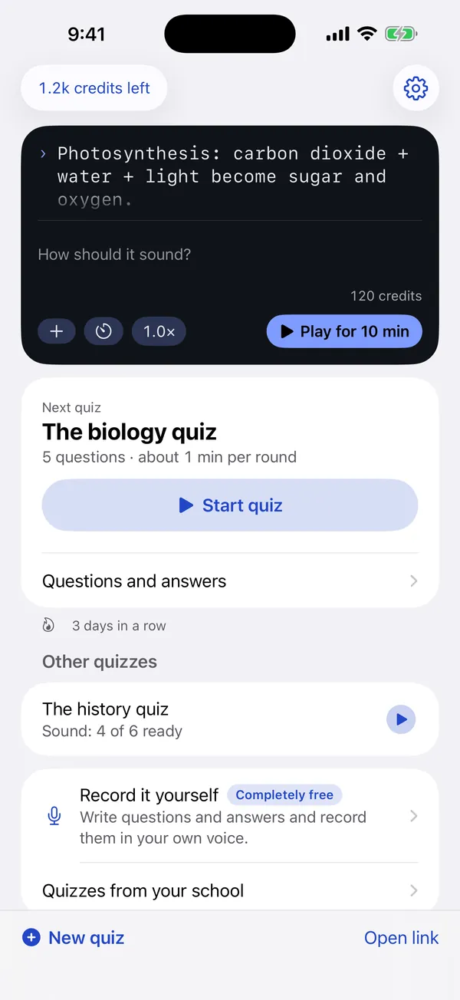
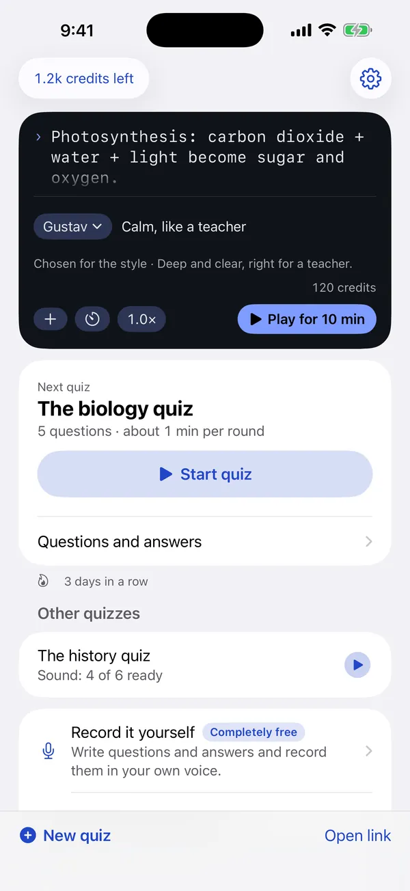
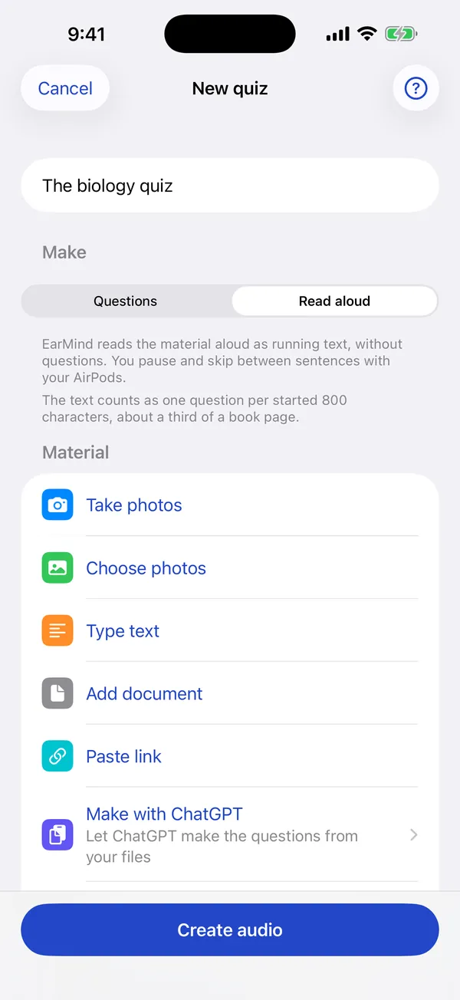
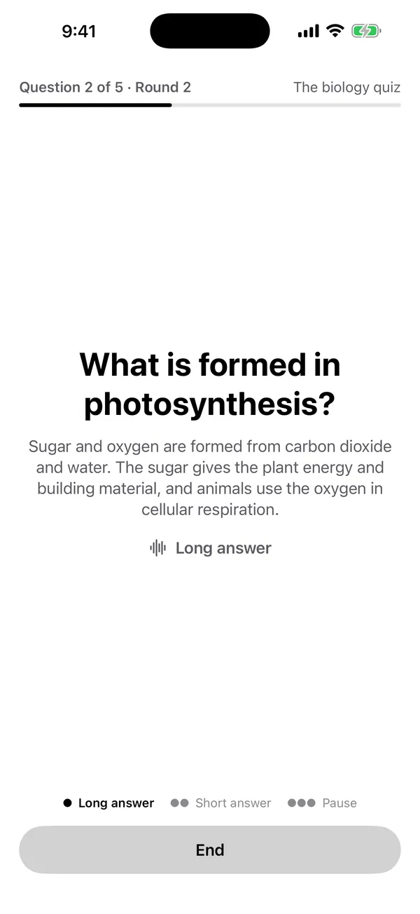
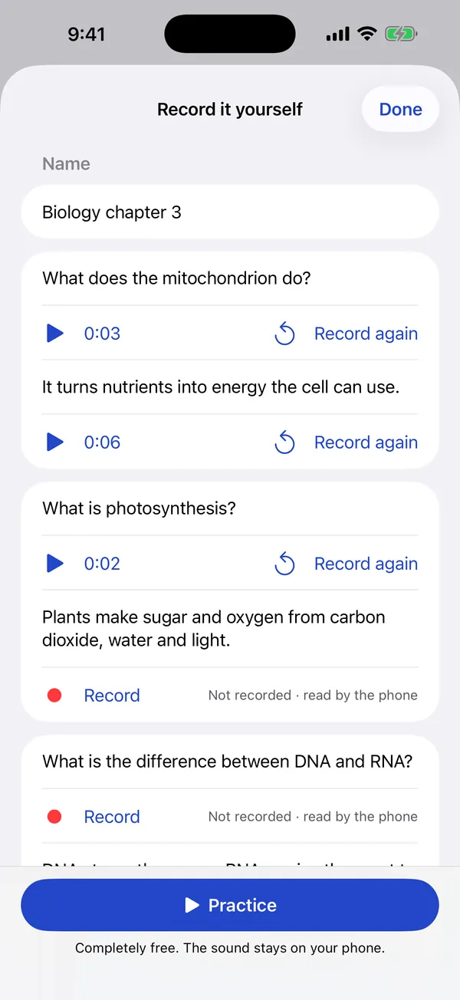
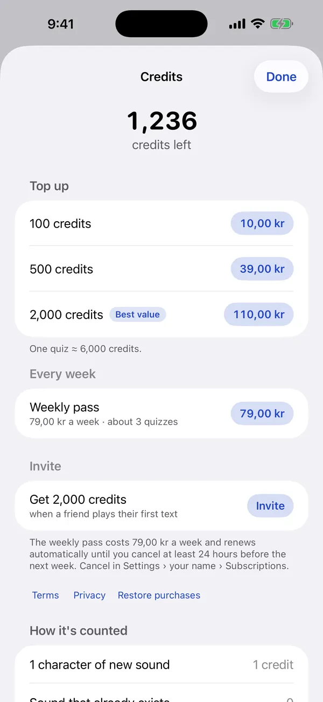

Learn it by listening.
Type what you want to learn. EarMind reads it in your AirPods, again and again.
Or snap your textbook and get quiz questions with answers. You control it by pressing your AirPods, no microphone.
Try it in your browser
The beta works on your phone and computer: Say in AirPods, voices, quizzes from text and the listening modes. No download.
Keep the screen on in the beta. Your phone can be up to about 10 m (33 ft) from your AirPods, so you can put it down.
Open the beta1,500 free credits every month. Purchases come with the iPhone app.
How it works
Type what you want to hear, or snap your textbook. You listen in your AirPods.
Type what you want to hear
Type or paste a text and tap Play for 10 min. It repeats for up to an hour. Long text? Tap Compress for a shorter one with the same content.

How should it sound?
Type something like calm, like a teacher and EarMind picks a voice. Or choose one yourself and preview it for free.

Or snap your textbook
Tap New quiz and add photos, a document, a link or text. Choose Questions or Read aloud.

Start quiz
Questions are read in your AirPods. Press once for the long answer, twice for the short one, three times to pause.

Screens from a test version of the app.
Record it yourself – completely free
Write your own questions and answers, record them in your own voice and practice them in your AirPods, just like a quiz.
No credits, and the sound stays on your phone. Anything you haven't recorded is read by the phone's own voice.

More modes (beta)
Modes that listen and answer in your ear, like a spoken quiz or interview practice. They ask first and always show that they're listening.
Question you're not prepared for? Say [your words] so our AI activates.
Free to start
1,500 credits are included every month. 1 credit is 1 character of new audio. Repeats and audio that already exists are free. One quiz is about 6,000 credits.
More when you need it
Credit packs and a weekly pass come with the iPhone app. The weekly pass renews every week until you cancel.
Invite a friend
You get 2,000 credits when your friend plays their first text.

Want the iPhone app?
It isn't out yet. Leave your email and we'll let you know when it is.
Waitlist: we use your email only to tell you when the app is out. We store the address, when you gave consent and which link you came from (for example a channel like tiktok). To be removed, or with questions about your data, email stenlundaron@gmail.com.
AI answers can be wrong, so check them against your textbook.
More
Frequently asked questions
- Can I try it without downloading anything?
- Yes. Open the beta at earmind.vercel.app/beta on your phone. Keep the screen on while it plays.
- Does it use the microphone?
- Say in AirPods and quizzes never use the microphone. More modes (beta) ask first and always show that they're listening.
- What does it cost?
- It's free to start: 1,500 credits every month. Repeats are free. Packs and a weekly pass come with the iPhone app.
- Can I choose the voice?
- Yes. Describe how it should sound and EarMind picks a voice, or choose one yourself. Previews are free; a new voice means new audio.